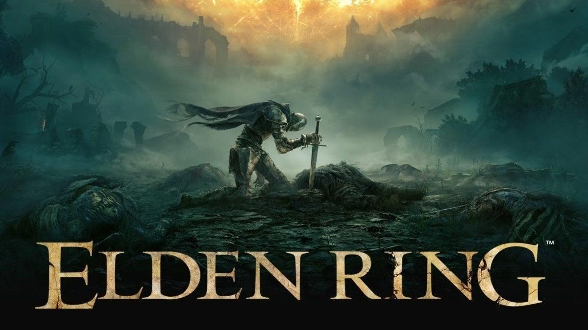

Cover

Trailer
Bosses
Starcourage Radahn

Starcourage Radahn is a demigod and one of the most powerful bosses in Elden Ring. He is known for his immense strength and mastery of gravitational magic, making him a formidable opponent for any player.
Godfrey First Elden Lord

Godfrey, the First Elden Lord, is a legendary figure in the world of Elden Ring. He was the first to wield the Elden Ring and is known for his unparalleled power and wisdom.
Elden Beast

The Elden Beast is the final boss of Elden Ring, representing the culmination of the player's journey. It is a majestic and terrifying creature that embodies the power of the Elden Ring itself, challenging players to their limits.
| IGN | GameRant | ScreenRant | GameSpot | GamingRadar+ | WccfTech | Daily Star | Game informer |
|---|---|---|---|---|---|---|---|
| 10/10 | 10/10 | 10/10 | 10/10 | 10/10 | 10/10 | 10/10 | 10/10 |